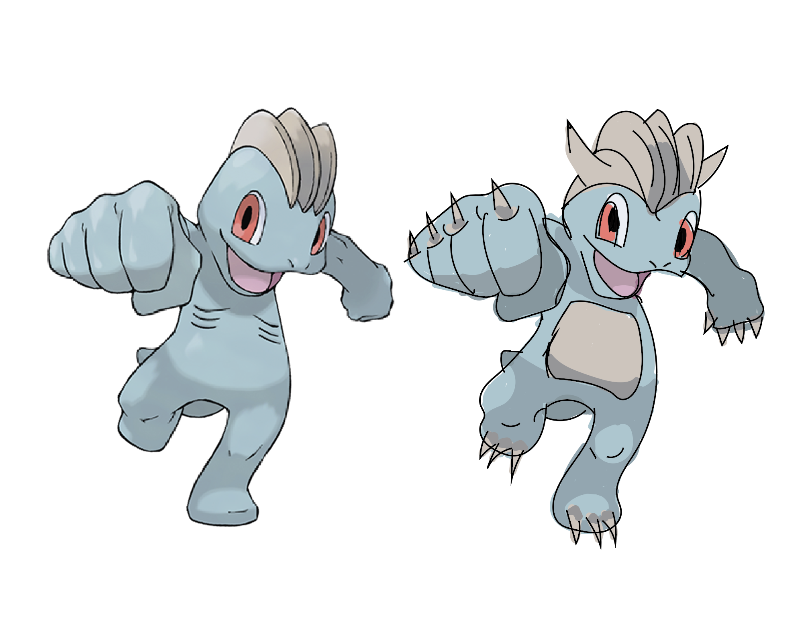
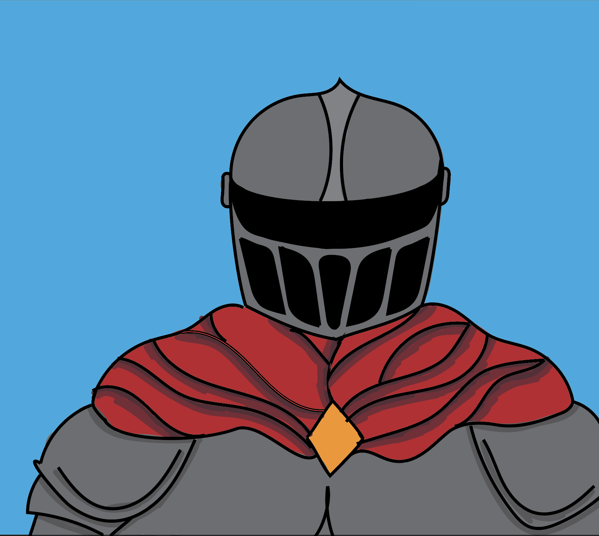

Main Page - Portfolio

About me
My name is Will Collette. I am a creative technologies major attending Illinois State University. My main focuses while studying here are Digital Art and Animation.
Featured Work
This is an animation I made in CTK 251, Introduction to Digital Animation. This was my first animation class, and this specific assignment asked us to create a short animation using a technique called "squash and stretch". I created this animation using Adobe Animate, and I used a Wacom tablet to draw the frames. The animation is about a ghost ball that bounces around the screen and interacts with the environment. I am very proud of this piece because it was my first time creating an animation, and I think it turned out very well.
Recent projects

This is a digital painting I made in CTK 201. It was my first Creative technologies class, and this particular assignment asked us to emulate an already existing piece of artwork. I chose to emulate my favorite pokemon, and I used a reference image of Machop to create this digital painting. The original work is on the left and my emulation is on the right. I used a Wacom tablet to create this piece, and I used Photoshop to color it in.

This is a digital painting I made in CTK 201. This specific assignment just asked us to create a piece of art using a medium we were not comfortable with. I chose to use a Wacom tablet and Photoshop to create this piece because I had no prior knowledge of Photoshop before this class. I drew this completly freehand and it was my first ever digital painting. I am very proud of this piece because it was my first time using Photoshop and I think it turned out very well.